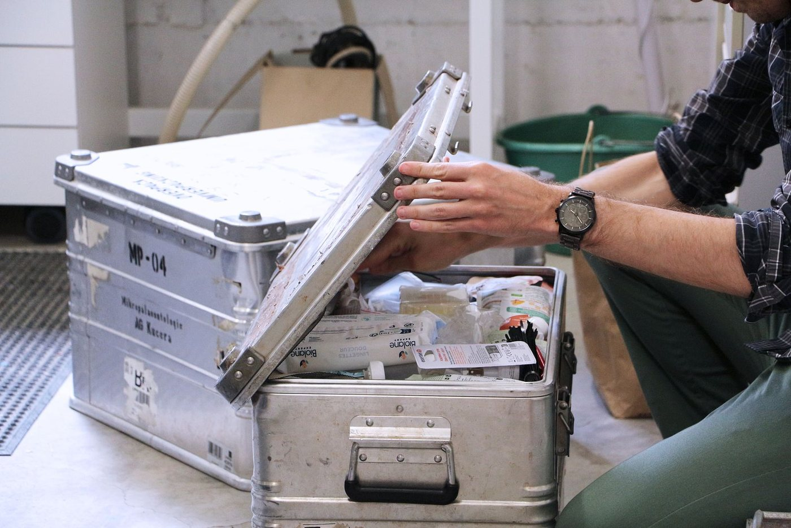

- Our key areas of expertise and technical strengths.

Carbonate system measurements
We specialize in high-precision marine carbonate system analysis, using an Agilent Cary 60 spectrophotometer with purified indicator dye for pH and ultra-low-volume total alkalinity titrations (down to 4 mL) on a state-of-the-art Metrohm OMNIS system. Following community best practices, our flexible systems can be deployed at sea or used in the lab to deliver robust carbonate chemistry data for experiments and field campaigns.
Chemical microprofiling
We routinely use a set of microsensors to measure chemical composition of water (e.g., pH, oxygen, hydrogen sulfide) in constrained environments and to follow reactions through time in our various experimental systems.
With our mobile Unisense micromanipulator, we can perform microprofiles of sediment porewaters on ships right after sediment collection, or on coastal sites. Using the Unisense NanoRespiration kit coupled with a Zeiss stereomicroscope and an axiocam, we can measure the rate of biogeochemical processes at the scale of individual microorganisms.
Foraminifera Cultures
We host the COntinuous REproduction for Foraminifera Facility (COREFF). COREFF is currently equipped with two incubators spanning from 0 to >35°C with light, allowing us to work with samples and temperatures mimicking polar to tropical conditions. Access to additional incubators and an environmental room is also possible on-site. Multiple microscopes, such as binoculars and inverted microscope equipped with an imaging system are available to track the evolution of the plankton in culture.
We are using and fine-tuning protocols to maintain specimens alive (mostly mediterranean species), make them reproduce and thrive in laboratory conditions. COREFF can simultaneously host thousands of planktonic foraminifera. Next to foraminifera, we also maintain multiple strains of diatoms as a potential food source for our specimens and their different life stages.
For more information such as access to live specimens, visits, planktonic foraminifera culture season, please get in touch with Julie MEILLAND ().
Pressurized reactors
To simulate abyssal (3 to 6 km-deep) and hadal (6 to 10+ km-deep) marine environments, we use pressurized, temperature-controlled reactors made out of titanium and sapphire windows, in which oxygen and pH sensors are incorporated, and from which water can be sampled air-tight without altering the pressure within.
Experiments can include cultures of hadal microbes, degradation of organic tissues in deep-ocean conditions, investigation of the pressure effect on chemical reactions.
Rotating disk reactors
Half a dozen reactors reproducing benthic hydrodynamic conditions, from high-energy (e.g., reefs) to very low-energy (abyssal plains), respectively, stirred, or with a rotating sediment disk, are present in the laboratory. Open or closed to the atmosphere, in free-drift or flow-through mode, and always temperature-controlled, they can be used to follow chemical reactions occurring in surface sediments at atmospheric pressure.
Chemical monitoring is performed via regular porewater microprofiles, discrete/continuous overlaying seawater chemical analyses, or measurements of solute fluxes across the sediment-water interface.